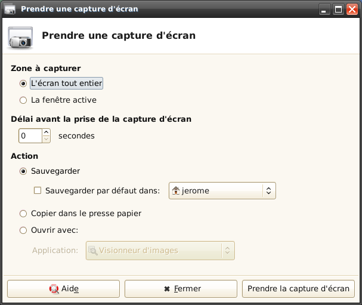

Cette application permet de prendre des captures d'écran de l'écran tout entier, de la fenêtre active ou d'une zone sélectionnée. Il est possible de régler le délai avant la prise de la capture d'écran et l'action à effectuer avec la capture d'écran: la sauvegarder dans un fichier PNG, la copier dans le presse-papier, ou l'ouvrir avec une autre application.
Une extension pour le tableau de bord de Xfce est aussi disponible.
Pour lancer l'application, utilisez le lanceur "Prendre une capture d'écran", dans la catégorie "Accessoires" du menu principal de Xfce.
Cette fenêtre apparaîtra alors :
La section "Zone à capturer" permet de choisir la partie de l'écran à capturer :
La section "Délai avant la prise de la capture d'écran" permet de régler le délai qui s'écoule entre l'appui sur le bouton "Prendre la capture d'écran" et la prise de la capture d'écran. Cela permet d'ouvrir des menus, d'effectuer une action quelconque à afficher sur la capture d'écran.
La section "Action" permet de choisir l'action à effectuer avec la capture d'écran. Trois actions sont possibles.
"Sauvegarder" enregistrera la capture d'écran dans un fichier PNG. Si vous cochez la case "Sauvegarder par défaut dans", la capture d'écran sera enregistrée après l'appui sur le boutton "Prendre la capture d'écran" dans le dossier spécifié à droite, sans afficher de fenêtre de sauvegarde. Sinon, une fenêtre de sauvegarde vous permettra de choisir où la sauvegarder, et sous quel nom.
"Copier dans le presse papier" permet de coller la capture d'écran dans une autre application, comme un logiciel de traitement de texte. Quitter l'application avant d'avoir collé la capture d'écran provoque souvent son effacement du presse papier, certains gestionnaires de presse papier permettent d'éviter ce problème.
"Ouvrir avec" permet d'enregistrer la capture d'écran dans le dossier temporaire du système et de l'ouvrir avec l'application choisie dans le champ en dessous. Les applications permettant d'ouvrir des images sont automatiquement détectées et proposées dans la liste déroulante.
Les options de ligne de commande permettent de prendre des captures d'écran rapidement. Elles permettent aussi de faire fonctionner la touche Prt Scrn en haut à droite de la plus part des claviers. Pour cela, réglez les raccourcis de votre environnement de bureau pour qu'ils lancent xfce4-screenshooter avec une ou plusieurs des options suivantes lorsque la touche Prt Scrn est appuyée.
L'option -w permet de prendre une capture d'écran de la fenêtre active.
L'option -f permet de prendre une capture d'écran de l'écran tout entier.
L'option -r permet de sélectionner une zone à capturer en cliquant avec la souris sur un point de l'écran sans relacher le bouton de la souris, puis en déplaçant la souris jusqu'à l'autre coin de la zone et enfin en relachant le bouton de la souris.
L'option -d suivie d'un entier positif permet de régler le délai en secondes avant la prise de la capture d'écran lorsque les options -w, -f ou -r sont données.
L'option -s suivie d'un chemin vers un dossier existant permet de choisir où la capture d'écran est sauvegardée. Elle n'a un effet que si les options -w, -f ou -r sont données. En combinant cette option avec l'option -h, vous pouvez enregistrer une capture d'écran dans un dossier donné, sans afficher de fenêtre de sauvegarde.
L'option -h permet de sauvegarder les captures d'écran sans afficher de fenêtre de sauvegarde. L'option -s permet de choisir où les sauvegarder. Cette option n'a un effet que si les options -w, -f ou -r sont données.
L'option -o suivie d'un nom d'application permet de sauvegarder la capture d'écran dans le dossier temporaire du système et de l'ouvrir avec l'application dont le nom est donné après -o. Cette option n'a un effet que si les options -w, -f ou -r sont données.
Pour ajouter l'extension au tableau de bord, cliquez droit sur le tableau de bord et sélectionnez "Ajouter un élément". Dans la fenêtre qui apparaît, choisissez d'ajouter l'extension nommée "Capture d'écran".
Vous pouvez ensuite configurer la prise des capture d'écran en cliquant droit sur l'icône de l'extension, sur le tableau de bord, et en choisissant "Configurer". Une fenêtre de configuration similaire à la fenêtre de l'application que vous pouvez voir plus haut apparaît alors. Merci de regarder plus haut pour les différentes options.
Il suffit ce cliquer sur l'icône de l'extension pour prendre une capture d'écran.